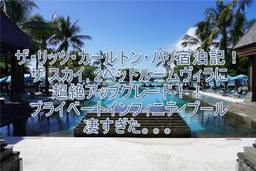
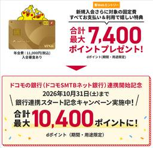

平均年収陸マイラーの毎年家族で海外旅行
https://sasamiler.net
陸マイラーとしてマイルをお得に貯める方法を紹介するブログ
フィード

ザ リッツ・カールトン・バリ (The Ritz-Carlton, Bali)宿泊記！スカイヴィラ 2ベッドルームレビュー！コスパもいいのでおすすめ！
平均年収陸マイラーの毎年家族で海外旅行
ザ リッツ・カールトン・バリ (The Ritz-Carlton, Bali)宿泊記！スカイヴィラ 2ベッドルームレビュー！コスパもいいのでおすすめ！ こんにちは！sasasanです。 家族でバリ島に旅行で…
11時間前

過去最高ポイント！！dカードゴールド新規発行で最大39,400円分は激アツ！！一番お得な発行方法とは！？
平均年収陸マイラーの毎年家族で海外旅行
dカードゴールド新規発行で最大39,400円分は激アツ！！一番お得な発行方法とは！？ こんにちは！sasasanです。 dポイントを貯めたい人であれば絶対に持っておきたいクレジットカードがあります。 &nb…
13時間前

【決定版】大改悪！ANAスーパーフライヤーズカード（SFC）ルール変更まとめ！「SFC PLUS」と「SFC LITE」の違いを徹底解説！2028年4月からスタート！
平均年収陸マイラーの毎年家族で海外旅行
2026年9月【決定版】大改悪！ANAスーパーフライヤーズカード（SFC）ルール変更まとめ！「SFC PLUS」と「SFC LITE」の違いを徹底解説！2028年4月からスタート！ こんにちは！sasasanです。 &n…
14日前
2026年10月最新版！JAL陸マイラーの年間17万JALマイルの貯め方の全て！誰でも出来る方法から裏ワザ完全ガイド！！
平均年収陸マイラーの毎年家族で海外旅行
2026年最新！JALマイルを大量に貯める裏ワザ！陸マイラーが年間17万JALマイルの貯め方の方法、初心者でも誰でも出来る方法から裏ワザテクニックまで完全解説！！ JALマイルの貯め方が知りたい！ 陸マイラーのJALマイ…
14日前
2026年10月最新！陸マイラーのANAマイルの貯め方と裏ワザ！年間20万ANAマイルを貯める全ての方法を紹介！
平均年収陸マイラーの毎年家族で海外旅行
2026年10月最新！陸マイラーのANAマイルの貯め方と裏ワザ！年間20万ANAマイルを貯める方法を大公開！ ANAマイルの貯め方が知りたい！ ANA陸マイラーがやってるANAマイルを大量に貯める裏ワザが知りたい！ この…
14日前
ポイントインカム20周年激アツキャンペーン！5つの超お得なキャンペーンで大量ポイントをゲットしよう！！
平均年収陸マイラーの毎年家族で海外旅行
ポイントインカム20周年記念キャンペーン！まだの人は5つのビックキャンペーンを見逃すな！！ こんにちは！sasasanです。 陸マイラーとして切っても切り離せないポイ活。 ポイントサイトは数あれど、優秀なポ…
15日前
2026年10月最新！リニューアルANAアメックス入会キャンペーンで最大247,500ANAマイル！大量マイルのお得な発行方法、更に貰う裏ワザ！
平均年収陸マイラーの毎年家族で海外旅行
リニューアルしたANAアメックスゴールドカードの入会キャンペーンが過去最強に激アツ！ANAアメックスプレミアムなら最大247,500ANAマイルが貰える！ 2026年10月以降の最新のANAアメックスの入会キャンペーンが…
16日前
2026年10月最新！JALマイル80％交換なモッピーのJALドリームキャンペーンの条件、詳細のまとめ！
平均年収陸マイラーの毎年家族で海外旅行
2026年10月最新！JALマイル80％交換なモッピーのJALドリームキャンペーンの条件、詳細のまとめ！ こんにちは！sasasanです。 モッピーのJALドリームキャンペーンの条件が大幅改善です！！ モッ…
17日前
2026年10月最新のJGC修行完全ガイド！新プログラムでどう変わった？JAL修行、FOP修行のメリット、やり方、費用を最小限にする裏技テクニック！
平均年収陸マイラーの毎年家族で海外旅行
JGC修行を徹底解説！JALのステータスJGCとは？新プログラムでどう変わったのか？最新のメリットや修行費用を最小限にする裏技教えます！ 「JAL Life Status プログラム」により2024年からJGC修行の方法…
17日前
2026年10月最新！アメックスビジネスゴールドの入会キャンペーンが170,000ポイント激アツ！更にポイントを貰う裏ワザ？
平均年収陸マイラーの毎年家族で海外旅行
2026年10月最新！アメックスビジネスゴールドの入会キャンペーンが170,000ポイント激アツ！更にポイントを貰う裏ワザ？ こんにちは！sasasanです。 陸マイラーの間で大量ポイントが稼げるキャンペー…
17日前